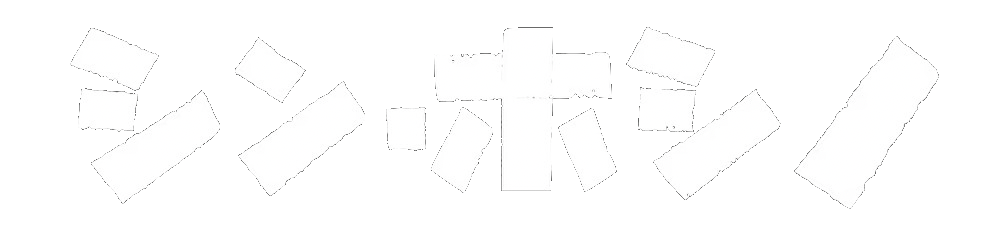
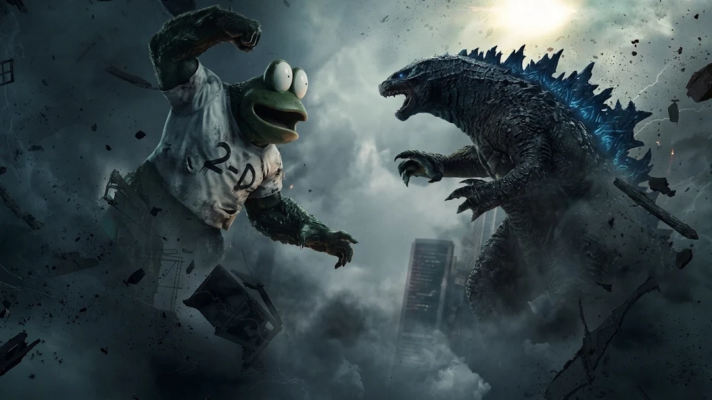
星野製作所は、戦うことを選んだ
SHIN HOSHINO
ディピョン丸（星野製作所 公式キャラクター） ／ ゴジラ
内閣危機管理官監 ／ 星野製作所 巨大災害対策課
企画原案：社長 ／ 製作：星野製作所 ／ 配給：東宝
諦めから、反撃へ。
1.5 ROAD SHOW
特報①
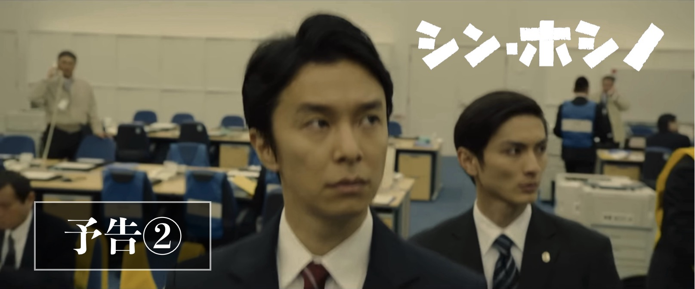
予告②
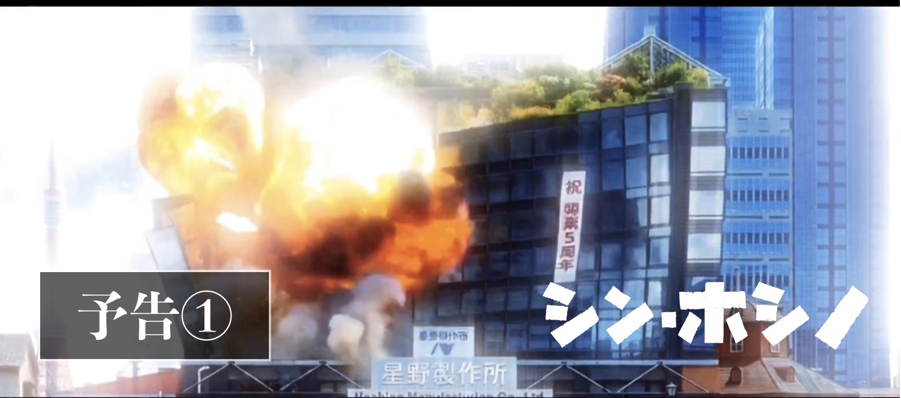
予告①
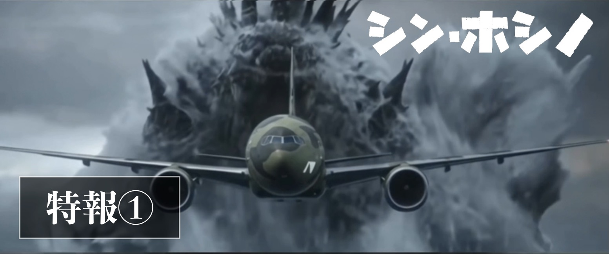
特報①

東京湾アクアライン破断。その後相模湾から突如上陸した巨大不明生物。
当初避難しかないと結論づけた星野製作所だったが、
三田課長の突然の思いつきにより事態は急転する――。
日本政府および内閣危機管理官監との極秘協定のもと、
星野製作所公式キャラクター『ディピョン丸』が前線へ投入される！
企画制作：星野製作所 社長
一匹のカエルと日本政府の総力を挙げた、
前代未聞のゴジラ駆除作戦が今、幕を開ける。
現実（ゴジラ） 対 虚構（ディピョン丸）。
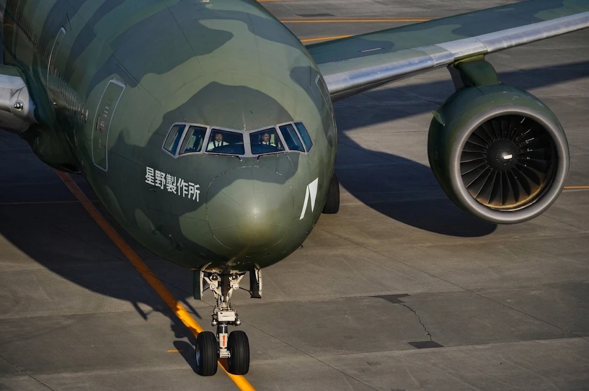
images/b774.jpgベース機体：ANA・B777-300
既存の大型機B777を星野製作所の技術陣が突貫で急改造した特殊機体。ゴジラを誘い出す「囮（おとり）」としての危険な任務を担い、至近距離での観測と誘導を行う。というかよくこんなありふれた大型機に誘き寄せられるもんだ。思考回路は小2レベルかね。
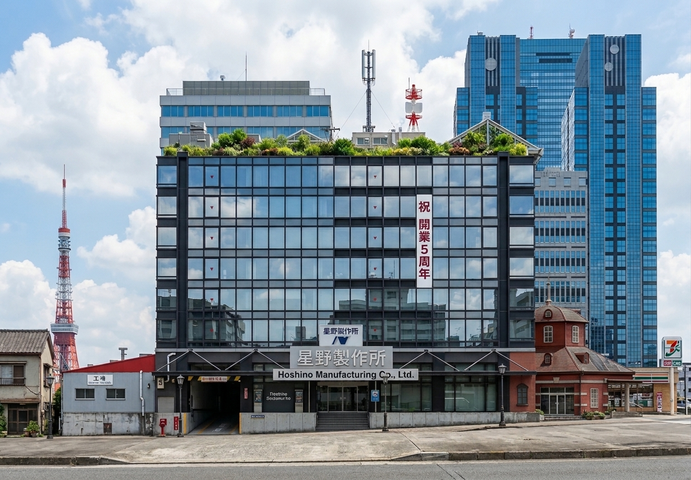
images/honsha.jpgアクセス：武蔵新田駅 徒歩4分
巨大災害対策課の指令中枢であり、ディピョン丸の拠点。当初指揮を執る本部になる予定だったが、ゴジラに踏み潰された為、最終的な指揮は立川支部で行うことになった。
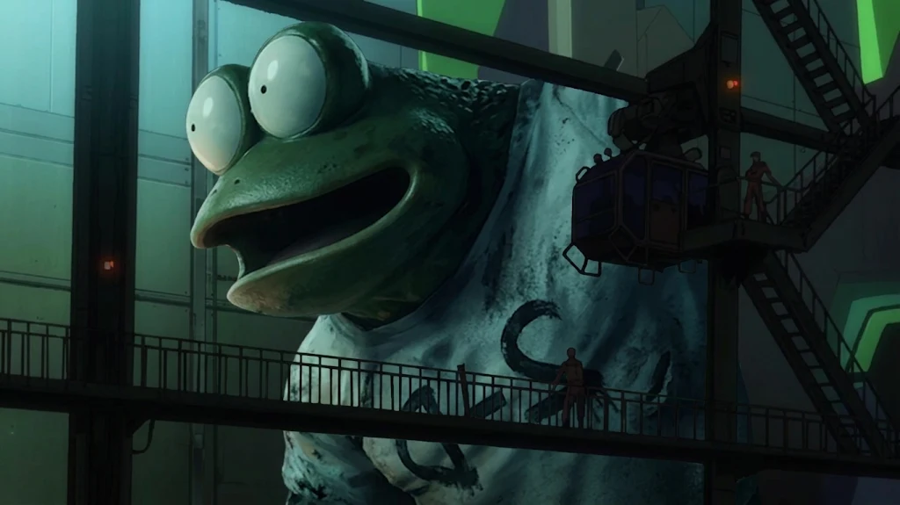
imagesディピョン丸
星野製作所 公式キャラクター（カエル）。ゴジラ討伐の切り札。
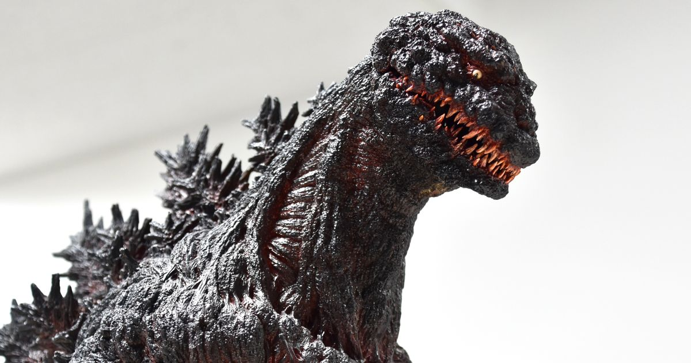
images/cast2.jpgゴジラ
突如上陸した巨大不明生物。日本最大の脅威。
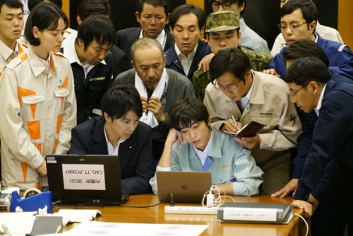
images/cast3.内閣、各省 ／ 巨大災害対策課
ディピョン丸との共同作戦を指揮する政府・企業合同チーム。
星野製作所一尉課長 三田幸三
突然の思いつきで全スタッフの避難計画を白紙に戻した張本人。
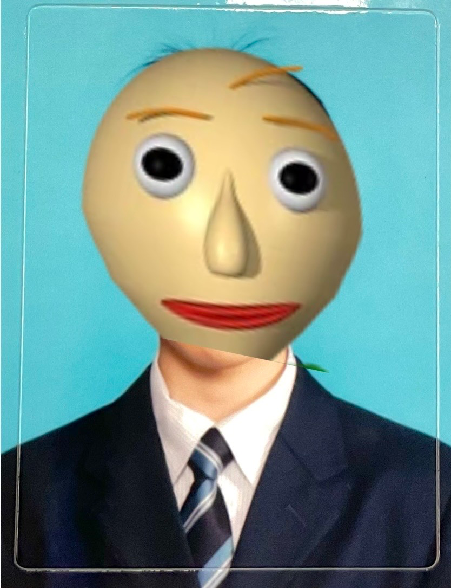
images/staff1.jpg監督・脚本・編集：
2021年より映像編集の活動を始めた者。「残念無念。」や各種パロディ作品を作り、星野製作所という企業も起業している。今や日本を代表する監督・脚本家として活動中。これからの作品に乞うご期待
 images/staff2.jpg
images/staff2.jpg
制作・技術開発
3dグラフィックや現場の統率、様々な編集加工をする班。全員空気「うちの公式キャラのディピョン丸とゴジラを戦わせよう」という一言で、 作品のタイトルから世界観まで全てをひっくり返した。